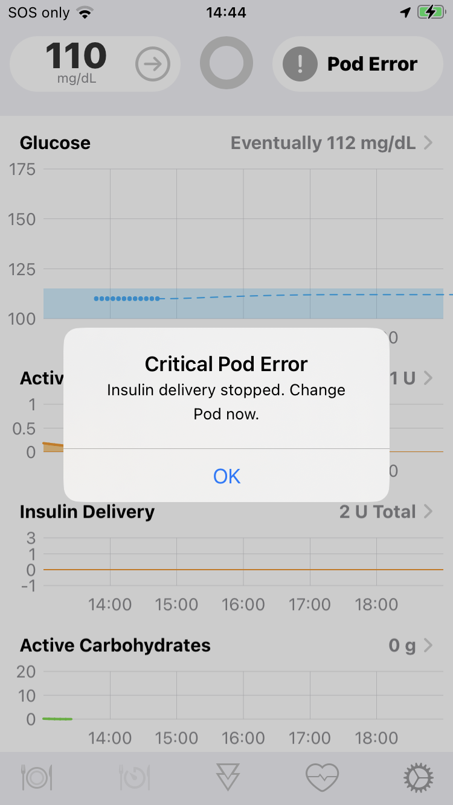

Omnipod Faults⌁
Pod fault shown in HUD:

Loop will put a higher RF & battery load on a Pod than the PDM due to its regular and repeated communications. A Pod with weakened batteries appears to be more likely to fault for conditions like static electricity and occlusions/pump issues that Loop is not directly causing, like internal fault codes 052, 061, 064 and 066. Pods always perform safety checks and if a potential problem is found, the pod will abort itself by screaming and stop with the insulin delivery.
Note
During our extensive tests after getting all commands working properly, we still encountered many failures due to 1 specific safety check. This check needed to recover its counter within 30 minutes after a temp basal returning to a normal basal schedule, else the the Pod would scream. We eventually solved this by disabling only this particular check. Therefore the 096-106 faults are always ignored in the current configuration of Loop.
Known internal pod fault codes⌁
The currently known Pod Faults are listed here on the openomni wiki page: Pod Fault codes
Ways to reduce the possibility of a fault⌁
- Keep the Loop app up to date (newer versions might include improvements to reduce Pod RF/battery load)
- Use a solid 433 Mhz RileyLink (a 916 Mhz RL will work with a limited range, but it’ll increase thePod RF/battery load)
- Try to avoid situations with marginal communications (retransmits and such increase the Pod RF/battery load)
- If bolusing after 60-72 hours or more of Pod life, consider using two smaller boluses instead of a larger one
- Try using latest gen Pods if possible (rumored improvements for static electricity & occlusion issues)
- Consider changing to new Pod earlier (e.g., at 60-70 hours instead of 70-80 hours)
Replacement Pod⌁
Normal pod use can still give these 2 internal pod faults, which are not eligible for a replacement Pod: 028, Pod expired 024, Empty reservoir
Hardware faults before use⌁
You can always call Insulet tech support if a Pod has a clear visible failure on the Pod itself during startup and avoid mentioning that a PDM was not used in case of:
- A cannula sticking out when the end cap was removed.
- The window on the top of the Pod not turning red indicating the cannula insertion was successful.
- The adhesive not working properly when trying top place it on your body.
Faults while using⌁
If the Pod fails during use with Loop a replacement might still be possible. Pods fail with many different faults with a PDM as well, so you can always try asking for a replacement using the internal fault code which Loop can show like this after faulting:

But do note: The software which communicates with the Pod isn't developed or supported by Insulet, so you will have to decide what to tell them in case they ask what you did prior to the error which might have caused it.